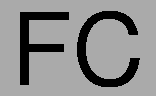
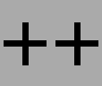

When we're not writing code for the library, sometimes we enjoy trying to come up with a better FC++ logo. Here are the logos we have made; most of them use a greek lambda, a symbol which often stands for functional programming. If you have some artistic talent (almost certainly it will be more than we have!), feel free to mail us your own creations; with your permission, we may add your artwork to this page (or maybe even use it on the front page as our new logo).

|  |  |